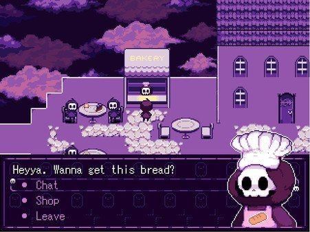

Acerca de los RPG
Un videojuego de rol o juego de rol por computadora/ordenador, también llamado por simplificación juego de rol (JDR), o referido con la sigla inglesa RPG (role-playing game) o CRPG (computer role-playing game), es un género de videojuegos donde el jugador controla las acciones de un personaje (o de diversos miembros de un grupo) inmerso en algún detallado mundo. La gran mayoría de estos videojuegos tienen sus orígenes en juegos de rol de sobremesa[1] (incluyendo Dungeons & Dragons) y usan mucho de la misma terminología, escenarios y mecánicas de juego. Otra mayor similitud con los juegos de lápiz y papel incluyen una desarrollada historia y elementos narrativos, el crecimiento del personaje del jugador, complejidad, así como también rejugabilidad e inmersión. El medio electrónico elimina la necesidad de un director de juego e incrementa la velocidad de resolución de combate. Los JDR han evolucionado desde videojuegos de texto a visualmente ricas experiencias 3D.
